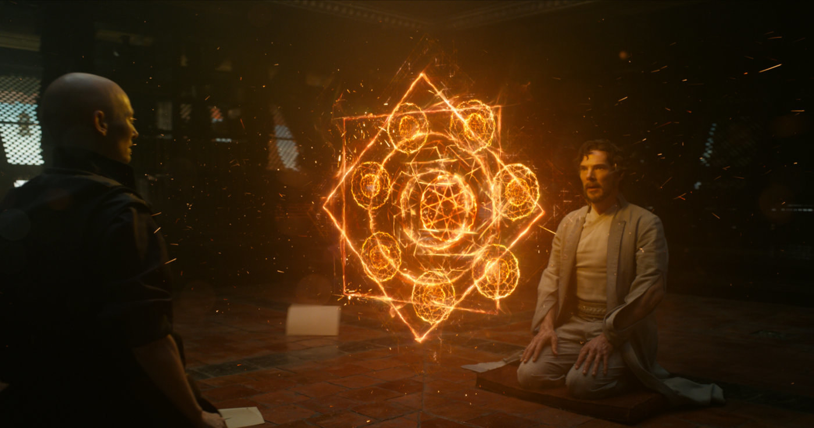

About Me

Early years
Stephen Vincent Strange, M.D., Ph.D., is a brilliant but highly egotistical fictional doctor. He was born in Philadelphia and raised in New York City. After high school, he went to New York College as a pre-med student, entered medical school at Columbia University and completed his residency at New York-Presbyterian Hospital, where his success made him arrogant.
Despite his reputation for being able to handle even the most complicated surgical procedures, Strange is self-centered and greedy, and only treats patients who can afford to pay his exorbitant fees. One night, while speeding in his car, a terrible accident shatters the bones in his hands, leading to extensive nerve damage. He soon finds that his fingers tremble uncontrollably, rendering him unable to perform surgery. Too vain to accept a teaching job, Strange desperately searches for a way to fix his hands and subsequently wastes all of his money on expensive, but unsuccessful treatments.
Journey to become Sorcerer Supreme
Broke and ostracized from his colleagues, Strange becomes a drifter. He happens to overhear two sailors in a bar discussing a hermit called the Ancient One (who is actually the Earth's Sorcerer Supreme) in the Himalayas, who can heal any ailment. Despite not personally believing in magic, Strange uses the last of his money to track down the aged mystic. The Ancient One refuses to help Strange due to his arrogance, but senses a good side that he attempts to bring to the surface. He fails, but Strange then commits a heroic act when he discovers the Ancient One's disciple, Baron Mordo, attempting to kill his mentor and usurp his power. After a confrontation with Mordo leads to him being shackled with restraining spells preventing him from either attacking Mordo or warning the Ancient One, Strange desperately and selflessly accepts the Ancient One's offer to become his apprentice to have some hope of helping the old man. The Ancient One, pleased at Strange's sincere change of heart, accepts Strange as his new student and promptly frees him from the restraining spells while explaining he was aware of Mordo's treachery all along. Strange soon becomes Mordo's most enduring enemy, as the Ancient One trains the doctor in the mystic arts. After completing his training, Strange returns to New York City and takes up residence within the Sanctum Sanctorum, a townhouse located in Greenwich Village, Manhattan, accompanied by his personal assistant Wong.He acquires an assortment of mystical objects, including the powerful Eye of Agamotto and Cloak of Levitation,
Allies and Affiliates
Though a loner by choice, Strange has opened his heart and home to a precious few he can call friends. Chief among these individuals is Wong, a seemingly simple servant on the surface, who is in fact a martial arts master and accomplished scholar. Wong tends to Stranges Sanctum Sanctorum, a stately mansion in New Yorks Greenwich Village, protecting it and its master from outsiders while advancing his own skills. Together, Doctor Strange and Wong have traveled the dark and light together as employer and employee, but also as brothers.
During Stranges initial forays into the Dark Dimension and his earning of Dormammus wrath, he met a young woman named Clea who would become not only his student and partner, but also his beloved. Eventually, Clea left Stranges side after many adventures to ascend to the rulership of the Dark Dimension, but the two have found each other again and again to renew their bonds in even the most strident situations.
After a short period of non-activity as a sorcerer, Strange came in contact with two individuals who would shape an important corner of his life, Namor the Sub-Mariner and the Hulk. Together, the three men -- joined soon after by the Silver Surfer as well -- formed the basis of an experiment in teamwork known as the Defenders, a group of heroes formed by Strange to address missions on a sporadic basis and without any formal structure. Many versions of the Defenders followed the original “non-team,” with Strange at the forefront of a good number of them as “members” came and went as they would.
Powers and Abilities
- Master of the Mystic arts: As a Master of the Mystic Arts, Doctor Strange possesses incredible magical knowledge and power, able to conjure powerful spells within moments.
- Astral Projection: Doctor Strange can send his astral projection away from his body.
- teleportation: Doctor Strange sling ring allows him to teleport himself or others, opening and closing portals to far-off locations.
- Eye of Agamotto (Time Stone): The Eye of Agamotto, which is in fact the Time Stone, allows Strange to alter time around objects, locations, or other beings, or to see potential futures.
- Cloak Of Levitation: Doctor Strange Cloak of Levitation allows him to fly, and can be used to grab hold of objects or enemies as needed.